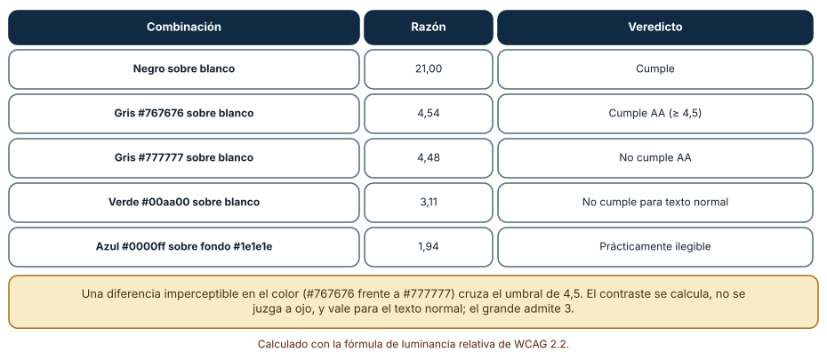
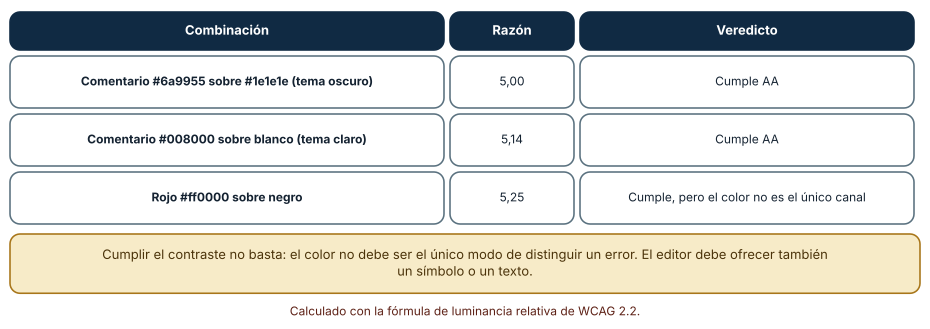
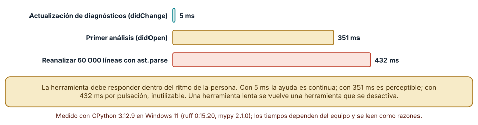

← SE-105 — Reproducción de errores y reducción de casos · ↑ Parte 08 · 📚 Índice completo · 🌐 Portal · SE-107 — Taller: diagnosticar un fallo desconocido →
Punto profesional y fundamento pedagógico
Punto profesional. La clase existe para evaluar productividad del entorno junto con teclado, zoom, contraste, movimiento y carga cognitiva.
Por qué aparece aquí. Se sitúa después de Reproducción de errores y reducción de casos y antes de Taller: diagnosticar un fallo desconocido: convierte el conocimiento anterior en una decisión observable que la clase siguiente podrá reutilizar. La continuidad se comprueba en el artefacto, no por compartir vocabulario.
Error conceptual que debe corregir. Optimizar atajos para una persona y llamarlo ergonomía universal.
Secuencia de aprendizaje. Antes de leer la solución, el estudiante predice el resultado del caso normal y del error conceptual anterior. Luego explica un caso resuelto paso a paso, construye un contraejemplo que cambie la decisión y, sin consultar el texto, reconstruye el mecanismo y lo aplica a una entrada nueva. La secuencia usa predicción, explicación propia, contraste y recuperación. ICAP distingue participación de construcción de conocimiento; How People Learn II exige conectar conocimiento previo, contexto y transferencia; la práctica de recuperación respalda producir de nuevo la explicación tras una demora; y Education for Life and Work exige devolución que explique la causa del error.
Evidencia de aprendizaje. Accessibility-check.md con tareas, barreras, ajustes y verificación por teclado. Debe contener predicción previa, observación, explicación causal, contraejemplo, criterio de aceptación y una nota de qué dato haría cambiar la conclusión.
Límite de la conclusión. La revisión básica no sustituye auditoría especializada ni pruebas con usuarios.
Trazabilidad fuente → afirmación
| Fuente primaria u oficial | Afirmación que respalda | Lo que no prueba |
|---|---|---|
| Web Content Accessibility Guidelines 2.2 | Percepción, operación por teclado y reducción de barreras en interfaces; autoridad: W3C | No demuestra por sí sola que el artefacto del estudiante sea correcto. |
| Language Server Protocol 3.18 | Mensajes, capacidades y sincronización entre editor y servidor; autoridad: Microsoft | No demuestra por sí sola que el artefacto del estudiante sea correcto. |
Antes de empezar
Esta clase continúa el entorno reproducible de diagnóstico de la Parte 08. Recupera la evidencia de la clase anterior, añade una decisión propia de Ergonomía, accesibilidad y productividad del entorno y deja un artefacto que la clase siguiente deberá consumir. La pregunta activa es: ¿Cómo reducir fricción sin imponer una única capacidad física, interfaz o estilo de trabajo?
Prerrequisitos
- Haber completado la clase anterior o reconstruir su contrato y evidencia.
- Python 3.11 o posterior, terminal, editor y Git; un segundo runtime es opcional y debe declararse.
- Trabajar con fixtures sintéticos: ninguna observación necesita datos de una persona o sistema real.
Problema auténtico
El entorno del entorno reproducible de diagnóstico requiere atajos no documentados, color rojo/verde y texto diminuto; una sesión larga de depuración produce errores y excluye a quien usa teclado o lector de pantalla.
Objetivos observables
Al terminar podrás explicar los cinco mecanismos de esta clase, predecir su comportamiento antes de ejecutar, construir un caso normal y uno límite, diagnosticar el fallo controlado, comparar una alternativa y entregar evidencia que otra persona pueda reproducir.
Mapa conceptual
Ver la notación fuente del diagrama
flowchart LR
N1[Ergonomía / carga] --> N2[Teclado / foco] --> N3[Color, texto / movimiento] --> N4[Salida accesible] --> N5[Automatización / agencia]
N5 -->|fallo o cambio| N1El mapa se lee como una cadena de razonamiento, no como fases obligatorias del runtime. La flecha de retorno indica que un fallo o cambio de requisito obliga a revisar el modelo inicial; no autoriza a parchear solo la última salida.
Temas y por qué importan
| Tema | Por qué cambia una decisión profesional | Evidencia mínima |
|---|---|---|
| Ergonomía y carga | Postura, pausas, repetición y legibilidad influyen en fatiga y errores, pero no existe configuración corporal universal. | Predicción, traza causal y contraejemplo de Ergonomía y carga en accessibility-check.md |
| Teclado y foco | Todas las acciones esenciales necesitan ruta por teclado con foco visible y orden lógico. | Predicción, traza causal y contraejemplo de Teclado y foco en accessibility-check.md |
| Color, texto y movimiento | Color refuerza pero no porta solo error o estado. | Predicción, traza causal y contraejemplo de Color, texto y movimiento en accessibility-check.md |
| Salida accesible | Trazas y diagnósticos requieren texto seleccionable, orden de lectura y niveles claros. | Predicción, traza causal y contraejemplo de Salida accesible en accessibility-check.md |
| Automatización y agencia | Automatizar formato, prueba o navegación reduce repetición, pero debe ser predecible, reversible y explicable. | Predicción, traza causal y contraejemplo de Automatización y agencia en accessibility-check.md |
Conceptos y decisiones
1. Ergonomía y carga
Postura, pausas, repetición y legibilidad influyen en fatiga y errores, pero no existe configuración corporal universal. El entorno permite tamaño, contraste, input alternativo y pausas. Productividad no justifica daño ni vigilancia invasiva.
2. Teclado y foco
Todas las acciones esenciales necesitan ruta por teclado con foco visible y orden lógico. Atajos deben poder descubrirse y personalizarse. Capturar combinaciones del sistema o depender de chord complejo puede bloquear tecnología asistiva.
3. Color, texto y movimiento
Color refuerza pero no porta solo error o estado. Contraste, etiquetas y símbolos textuales conservan significado. Animación de seguimiento o minimap puede desactivarse cuando distrae o provoca malestar.
4. Salida accesible
Trazas y diagnósticos requieren texto seleccionable, orden de lectura y niveles claros. Diagramas aportan notación fuente o explicación. Una terminal con mensajes accionables suele ser una alternativa robusta a una vista exclusivamente visual.
5. Automatización y agencia
Automatizar formato, prueba o navegación reduce repetición, pero debe ser predecible, reversible y explicable. Métricas de pulsaciones o tiempo activo no miden valor y pueden dañar privacidad y confianza.
El contraste se calcula
La accesibilidad del entorno de trabajo no es una cuestión de gusto. La razón de contraste de WCAG se calcula a partir de la luminancia relativa de dos colores, y los umbrales son numéricos: 4,5 para texto normal (nivel AA) y 3 para texto grande. Resultados calculados: negro sobre blanco, 21,00; gris #767676 sobre blanco, 4,54 (cumple); gris #777777 sobre blanco, 4,48 (no cumple); verde #00aa00 sobre blanco, 3,11 (no cumple para texto normal); azul #0000ff sobre #1e1e1e, 1,94 (prácticamente ilegible). Una diferencia imperceptible entre #767676 y #777777 cruza el umbral, y por eso se calcula en lugar de juzgarse a ojo.

Cómo leer la figura. La columna «Razón» es el cálculo y la última, el veredicto frente al umbral. Dónde deja de valer: el contraste mide luminancia, no discriminación de color ni comodidad de lectura prolongada; una combinación que cumple puede cansar, y personas con distintas condiciones visuales necesitan opciones, no un único valor.
Temas del editor
Los temas de sintaxis eligen colores para comentarios, cadenas y palabras clave. Un tema oscuro con comentarios #6a9955 sobre #1e1e1e da 5,00 (cumple), y uno claro con #008000 sobre blanco, 5,14. Que el rojo #ff0000 sobre negro dé 5,25 no basta como criterio: el color no debe ser el único canal que distinga un error; hace falta un símbolo, un subrayado o un texto. Un editor accesible permite cambiar el tamaño de la fuente, el tema y el espaciado, y respeta la configuración del sistema.

Cómo leer la figura. Las razones están calculadas, no tomadas del tema. Dónde deja de valer: los editores aplican más de un color por elemento y mezclas con transparencia; una prueba completa recorre los colores reales del tema en uso.
Presupuesto de latencia
La productividad del entorno también tiene un componente de tiempo. La actualización de diagnósticos tras una edición tomó 5 ms (continua), el primer análisis 351 ms (perceptible) y reanalizar 60 000 líneas con ast.parse, 432 ms (inutilizable por pulsación). Una herramienta que responde dentro del ritmo de la persona se usa; una que no, se desactiva y su valor se pierde. Medir la latencia de las herramientas del entorno es parte de su evaluación, igual que su precisión.

Cómo leer la figura. Las barras comparan tres respuestas de herramientas. Dónde deja de valer: los umbrales de percepción dependen de la tarea; para escribir, 100 ms ya se nota, mientras que una compilación completa tolera segundos.
Definiciones de trabajo
- ergonomía y carga: postura, pausas, repetición y legibilidad influyen en fatiga y errores, pero no existe configuración corporal universal.
- teclado y foco: todas las acciones esenciales necesitan ruta por teclado con foco visible y orden lógico.
- color, texto y movimiento: color refuerza pero no porta solo error o estado.
- salida accesible: trazas y diagnósticos requieren texto seleccionable, orden de lectura y niveles claros.
- automatización y agencia: automatizar formato, prueba o navegación reduce repetición, pero debe ser predecible, reversible y explicable.
Las definiciones son operativas para el entorno reproducible de diagnóstico. No convierten términos con historia más amplia en sinónimos y deben contrastarse con la documentación primaria enlazada al final.
Ejemplo mínimo
# Checklist observable
- tarea completa solo con teclado
- foco visible y orden lógico
- error indicado por texto además de color
- zoom 200 % sin pérdida de controles
- movimiento no esencial desactivableAntes de ejecutar, predice estado, resultado y error. Después registra versión, comando y salida. Si el fragmento es pseudocódigo o pertenece a otro lenguaje, etiquétalo como tal y no afirmes que fue ejecutado.
Ejemplo profesional
En el entorno reproducible de diagnóstico, una investigación conserva síntoma, entorno, reproducción, hipótesis, observaciones, causa, corrección y regresión. La implementación de esta clase debe conservar ese contrato aunque cambie la forma interna. El caso profesional no pregunta únicamente si produce una salida: pregunta quién puede producirla, qué estado observa, cómo falla y qué rastro permite disputar una decisión incorrecta.
Compara el caso normal con autorización falsa, evidencia incompleta, empate y repetición. Un mecanismo es apropiado cuando esas diferencias quedan visibles y localizadas; es peligroso cuando dependen de orden accidental, estado oculto o una convención que el consumidor no puede conocer.
Práctica guiada
- Copia el contrato de entrada y salida antes de escribir implementación.
- Predice el caso normal y un límite; identifica la invariante que no puede romperse.
- Implementa la versión mínima sin I/O dentro del núcleo.
- Ejecuta el caso y conserva comando, versión y salida bajo
evidence/. - Introduce el fallo controlado, reduce la reproducción y formula dos hipótesis rivales.
- Corrige la causa, añade regresión y ejecuta el conjunto completo.
- Compara con otro paradigma o lenguaje indicando qué semántica se preserva.
Ejercicios
- Cálculo: calcula la razón de contraste de
#595959sobre blanco y di si cumple AA y AAA. - Tema: elige tres colores de tu tema (comentario, cadena, error) y calcula su contraste con el fondo.
- Canal: propone para un error de compilación al menos dos señales además del color.
- Latencia: mide el tiempo entre guardar y recibir diagnósticos en tu editor y compáralo con el presupuesto de la Figura 3.
Reto verificable
Entrega implementación, fixtures, pruebas y un informe corto. Se aprueba si otra persona ejecuta desde checkout limpio, obtiene los mismos resultados y puede relacionar cada rama o transformación con una regla del dominio. No se aprueba por cantidad de archivos ni por usar la sintaxis característica del paradigma.
Caso conductor
El entorno reproducible de diagnóstico parte de una inversión de empates en la biblioteca de estructuras y algoritmos, captura versión y entrada mínima, compara un entorno sano con uno afectado y conserva la primera divergencia observable. Cambia después una sola regla o condición y revisa qué archivos, pruebas y trazas debieron modificarse. Esa superficie de cambio alimenta el proyecto final de la parte.
Preguntas frecuentes
¿Cumplir el contraste AA hace accesible mi editor?
Es necesario pero no suficiente. Hace falta además tamaño ajustable, no depender solo del color, navegación por teclado y compatibilidad con lectores de pantalla.
¿Qué es el nivel AAA?
Un umbral más estricto: 7 para texto normal. Se usa donde la lectura prolongada o el público lo exigen; AA es el mínimo habitual.
¿Cómo mido el contraste de mi tema?
Con la fórmula de WCAG sobre los colores reales, o con una herramienta de verificación. Se calcula para cada par de primer plano y fondo, incluidos los estados de selección y de error.
¿Por qué importa la ergonomía del teclado?
Porque el trabajo prolongado con atajos mal diseñados produce fatiga y errores; personas con movilidad reducida dependen del teclado. Los atajos se configuran y se documentan.
Fallo controlado y diagnóstico
Desactiva outlines para estética y pierde ubicación del foco. Restaura :focus-visible, prueba recorrido completo y documenta atajos equivalentes.
Registra síntoma, entrada mínima, hipótesis, observación que descarta cada hipótesis, causa, corrección y prueba de regresión. No cambies simultáneamente implementación, fixture y expectativa.
Reproduce un tema que parece legible y no cumple. Elige un color de comentario gris medio sobre blanco (por ejemplo #808080) y calcula su razón de contraste con la fórmula. Síntoma: se lee bien en tu monitor. Hipótesis: la razón está por debajo del umbral. Prueba: calcula la razón (3,95 en este caso) y simula un monitor con poco brillo o luz ambiente. Conclusión: la percepción personal no sustituye el cálculo. Guarda en tooling-map.md los colores, la razón, el umbral y la decisión.
Errores comunes y cómo corregirlos
| Síntoma | Causa | Corrección |
|---|---|---|
| Un tema «se ve bien» y no cumple | Se juzga a ojo | Calcular la razón con la fórmula de WCAG |
| Los errores solo se distinguen por el color | Color como único canal | Añadir símbolo, subrayado o texto |
| La herramienta se desactiva | Latencia mayor que el ritmo de trabajo | Medir y reducir la latencia, o ejecutarla en otro momento |
| Atajos que causan fatiga | Configuración por defecto sin revisar | Revisar y documentar atajos |
| Tamaño de fuente fijo en la configuración | No respeta ajustes del usuario | Usar unidades relativas y el ajuste del sistema |
Entorno y archivos clave
work/SE-106/
├── README.md
├── diagnostic_environment/
│ ├── domain.py
│ └── se_106.py
├── fixtures/cases.json
├── tests/test_se_106.py
└── evidence/diagnosis.mdEl README declara plataforma, runtimes, comandos, limpieza y límites. Evita dependencias externas cuando la biblioteca estándar permita observar el mecanismo; si agregas una, fija procedencia y versión.
Seguridad, ética y accesibilidad
- la autorización forma parte del dominio y no se infiere por ausencia de rechazo;
- no uses
eval, reglas descargadas ni serialización insegura; - limita colas, recursión, tamaño de entrada y tiempo de evaluación;
- redacta trazas y conserva una explicación textual además de color o animación;
- una recomendación automatizada debe poder revisarse, impugnarse y corregirse;
- respeta licencias de ejemplos y atribuye adaptaciones.
Puente hacia el trabajo con agentes
La interfaz de un agente (texto en un terminal, resúmenes, diferencias) también debe ser accesible: salidas que dependen solo del color o de caracteres especiales no llegan a lectores de pantalla. Además, la latencia es parte de la experiencia: una herramienta de agente que tarda segundos en cada paso rompe el ritmo de revisión. Medir y declarar esas latencias es parte de evaluar un harness, junto con su corrección.
Transferencia
Traslada un fixture al segundo modelo, herramienta, plataforma o lenguaje. Compara representación de ausencia, error, mutabilidad, orden y cancelación. La transferencia está lograda cuando el contrato se conserva y las diferencias están explicadas, no cuando la interfaz se parece.
Evaluación y evidencia
| Criterio | Evidencia para aprobar |
|---|---|
| comprensión | explicación causal de los cinco mecanismos |
| corrección | normal, límite, inválido y contraejemplo |
| diseño | estado, efectos y contrato localizables |
| diagnóstico | reproducción mínima y regresión |
| transferencia | comparación semántica, no estética |
| reproducibilidad | versiones, comandos, salida y límites |
Fuentes
- Language Server Protocol 3.18 — Mensajes, capacidades y sincronización entre editor y servidor; autoridad: Microsoft.
- Debug Adapter Protocol — Breakpoints, frames, variables y negociación de capacidades; autoridad: Microsoft.
- Python Debugging and Profiling — Pdb, cprofile, timeit, tracemalloc y límites instrumentales; autoridad: Python Software Foundation.
- Python venv — Aislamiento de intérprete, scripts y entorno virtual; autoridad: Python Software Foundation.
- Development Container Specification — Configuración reproducible de herramientas y ciclo de vida del contenedor; autoridad: Dev Container Specification maintainers.
- Web Content Accessibility Guidelines 2.2 — Percepción, operación por teclado y reducción de barreras en interfaces; autoridad: W3C.
Cada fuente respalda el mecanismo indicado; ninguna demuestra que la implementación del entorno reproducible de diagnóstico sea correcta. Esa afirmación depende de fixtures, pruebas, trazas y revisión reproducible.
- WCAG 2.2: contraste mínimo: umbral de 4,5 y fórmula de luminancia relativa usados en las Figuras 1 y 2.
- WCAG 2.2: uso del color: el color no debe ser el único medio de transmitir información.
- Visual Studio Code: accesibilidad: opciones de accesibilidad del editor.
Límites y siguiente paso
Una checklist básica no sustituye auditoría con personas y tecnologías asistivas. El taller siguiente aplica método y herramientas a un fallo desconocido.
Glosario
- ergonomía y carga: postura, pausas, repetición y legibilidad influyen en fatiga y errores, pero no existe configuración corporal universal.
- teclado y foco: todas las acciones esenciales necesitan ruta por teclado con foco visible y orden lógico.
- color, texto y movimiento: color refuerza pero no porta solo error o estado.
- salida accesible: trazas y diagnósticos requieren texto seleccionable, orden de lectura y niveles claros.
- automatización y agencia: automatizar formato, prueba o navegación reduce repetición, pero debe ser predecible, reversible y explicable.
← SE-105 — Reproducción de errores y reducción de casos · ↑ Parte 08 · 📚 Índice completo · 🌐 Portal · SE-107 — Taller: diagnosticar un fallo desconocido →